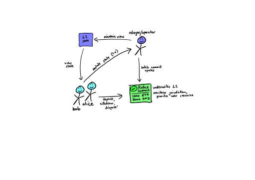
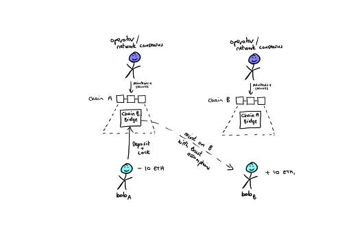

Types of Scaling Solutions
Several options have been proposed and worked on for scaling Ethereum on a shorter time frame. Some of these efforts are coming to fruition now and are worth considering. The main tradeoffs for choosing a scaling solution involve considerations of throughput vs. security vs. usability. The following are some solutions currently in the works at various stages:
Note: This section draws heavily on the work on Faina Shalts, engineer at Truffle (and Bootcamp alumni!) as well as from Ethereum.org
Rollups
In general, on Rollup Layer 2 solutions, transactions are submitted to L2 nodes instead of L1, and batched. Eventually they are put on L1 and no longer mutable. L2 nodes are Ethereum compatible, independent blockchains. All state and execution is handled in L2: Signature verification, Contract execution, etc. The L1 only stores transaction data
Note: the terminology here can be challenging but Pranay Mohan of Celo Network proposes we think of rollups as shard clients and the rollup contracts as on-chain light clients.
There are two major kinds of Rollups: ZK-Rollups and Optimistic Rollups.
Zero-Knowledge / ZK-Rollups
As we mentioned earlier in the section on Zero-Knowledge proofs, ZKPs can compress a larger amount of computation or verification into a single operation. ZK-Rollups bundle hundreds of transfers that occur on the ZKP Rollup L2 into a single L1, mainnet transaction via a smart contract located on L1. From the data submitted the smart contract can verify all the transfers that are included.
Critically, you don’t need all the data to verify the transactions, just the zero-knowledge proof. Transactions are written to Ethereum as calldata, to reduce gas.
- Pros No delay, less vulnerable to economic attacks
- Cons Limited to simple transfers and ZK-Rollup chains not compatible with EVM as validity proofs are intense to compute and have to build their own language to process. However, there is some work on building Solidity to ZKP language compilers, like this one for Cairo, Starknet's ZKP language.
ZK-Rollups are not worth it for applications with little on-chain activity but are attractive for simple, high-volume exchanges. Currently using this sort of rollup: Loopring, Starkware, Matter Labs' zkSync, Aztec's ZK.Money network
Optimistic Rollups
Optimistic Rollups use a sidechain that sits in parallel to the mainnet Ethereum chain. They don’t do any computation by default: after a transaction, the Optimistic Rollup L2s proposes a new state to the L1 mainnet, or “notarizes” the transaction. L2 Transactions written to L1 mainnet as calldata.
The main mechanism that makes this work are fraud proofs: If a verifier notices a fraudulent transaction the Optimistic Rollup network will execute a fraud-proof and run the transaction’s computation using the available state data; the gas you need to run a fraud proof is reimbursed.

-
Pros Anything you can do on L1 you can do with Optimistic Rollups because it is EVM and Solidity compatible. All transaction data is stored on the L1 chain, meaning it remains secure and decentralized.
-
Cons Long wait times for on-chain transactions due to potential fraud challenges. Potentially vulnerable to attacks if the value in an optimistic rollup exceeds the amount in an operator’s bond.
Optimistic Roll-ups are currently being built by Optimistic PBC, Arbitrum, Fuel Network, ImmutableX, Deversifi and Cartesi
Channels
Channels, also called Side Channels or State Channels, allow participants to transact a certain number of times off-chain (on the channel) while only submitting 2 transactions to the network on chain (basically, the start and stop of the channel).
Fundamentally for a channel to exist, participants must lock a portion of Ethereum’s state, like an ETH deposit, in a multisig contract. Locking state in this way opens up the channel, allowing for the off-chain transactions to occur. When the interaction is finished, one final L1 transaction is submitted, updating the network state based on the activity that occurred on the channel (mainly the rebalancing of funds between the participants).
Sidenote: State channels on Ethereum can be enforced through a concept known as counterfactual instantiation. Here's a technical, but concise, overview of counterfactual instantiation:
Counterfactual instantiation is achieved by making users sign and share commitments to the multisig wallet. These commitments say that if the counterfactually instantiated contract were to be instantiated on-chain, the multisig wallet (which holds the state deposit) will look at the instantiated contract and transfer the appropriate state deposits based on the state of that contract.
On Ethereum, you can use the CREATE2 opcode to predetermine the address of a contract. This means you can make these commitments in a channel and, if you need to dispute something, either party can deploy that contract with the chain of valid commitments.
State Channel pros and cons (from Ethereum.org): - Pros Instant withdrawal/settling on mainnet, high throughput, lower cost per transaction - Cons Time and cost to set up and settle a channel. Funds must be locked up, participants need to periodically watch the network. Channels don’t support open participation.
Examples of state channels are Connext, Raiden Network, and Bitcoin's Lightning Network.
Sidechains
The terminology here can get a little tricky, so bear with us. Sidechains are essentially blockchain networks separate from your Layer 1 (for us, Ethereum). They are connected through a bridge, which allows state to be conveyed from one chain to the other.
We'll discuss this more in the crosschain and interoperability section, but essentially you'd use a chain that either has a consensus mechanism with a higher trust assumption (such as Proof of Authority) or some increased transaction throughput relative to your Layer 1. You would then be able to conduct transactions on that sidechain and, when you need to update the state (perhaps a user wishes to exit your network but wants to take their tokens), you can release it on your Layer 1.

Examples of sidechains are SKALE and xDai.
Conclusion
This concludes our overview of the kinds of scaling solutions available to us. It is by no means comprehensive, since the field is rapidly evolving. In the next section, we'll provide a basic rubric by which you can judge any Layer 2 or general scaling solution.
Additional Material
- Wiki: Scaling (Ethereum.org) Great overview of the topic, including the "pros and cons" of different solutions
- Video: Layer 2 Scaling Explained (Finematics)
- Dashboard: L2beat A research and network dashboard showing the current level of activity on different networks.
- Article: Off-chain protocols: Sidechains and Rollups (Infura)
- Slide Deck: Scaling Ethereum using Rollups and Sidechains From the Engineering Ethereum meetup and presented by Peter Robinson.
- Article: Maker's roadmap for L2s Discusses one major application's understanding and strategy for Layer 2 solutions.
- Article: A Note on Bridges & Layer 2 Protocols (Patrick McCorry) A discussion around different sorts of bridge technologies and considerations we should have when using them.
- Video: How Layer 2 Addresses Barriers for Enterprise Building on Mainnet
Rollups
- Article: An Incomplete Guide to Rollups (Vitalik Buterin) A follow-up article to Buterin's post on eth.research entitled, "What would a rollup-centric ethereum roadmap look like?" and here's a video version of the article.
- Research: Compressing Data Using Rollups A technical discussions around optimizing data compression for Rollups Thread: Rollup verification A great walkthrough about how rollups conduct verification and how that verification can make it to Layer 1
- Article: (Almost) Everything You Need to Know About Optimistic Rollup (Paradigm) Really good technical overview of optimistic rollup tech
- Artilce: Arbitrum in under 10 minutes An explainer of Arbitrum, an optimistic rollup.
- Video: Scaling Ethereum with Rollups John Adler from Fuel Labs discusses the concepts behind optimistic rollups
- Article: Warp Your Way to Starknet Early example of a Solidity to Cairo compiler
State Channels
- Article: State Channel Basics
- Article: Generalized State Channels on Ethereum Goes into more detail about counterfactual instantiation.
- Article: State Channels Basic overview of the technology from 2015. Good evergreen concepts here.
- Article Series: A State Channels Adventure A potentially NSFW walkthrough of the physics behind counterfactual instantiation.
- Tutorial: Precompute Contract Addresses with CREATE2 A great code tutorial from Solidity by Example showing how to find a predetermined address for a contract, the backbone of counterfactual instantiation.
- Code Demo: Web3 Torrent A Proof of Concept from StateChannels.org, a torrenting network built using state channels (or a subset of state channels they call virtual channels).